第01讲 代数式
第01讲 代数式

课程标准 | 学习目标 |
①代数式的定义 ②掌握代数式的求值 | 1．了解字母表示数及代数式的概念；并掌握代数式的书写要求； 2．能解释一些简单代数式的实际背景或几何意义，发展符号感； 3．掌握代数式的求值，理解程序流程图的求值方法，初步感悟数学思想中的整体代入法的计算方法。 |

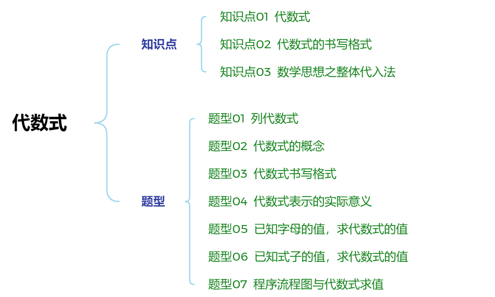
知识点01 代数式
1.定义：用运算符号（加、减、乘、除、乘方、开方等）把数或表示数的字母连接而成的式子叫做代数式。单独的一个数或一个字母也是代数式。
注意：
①代数式中除了含有数、字母和运算符号外，还可以有括号；
②代数式中不含有“=、>、<、≠”等符号。等式和不等式都不是代数式，但等号和不等号两边的式子一般都是代数式；
③代数式中的字母所表示的数必须要使这个代数式有意义，是实际问题的要符合实际问题的意义。
【即学即练1】
1．（23-24七年级上·湖南永州·期中）在下列式子中，（1） ，（2）
，（2） ，（3）
，（3） ，（4）0，（5）
，（4）0，（5）
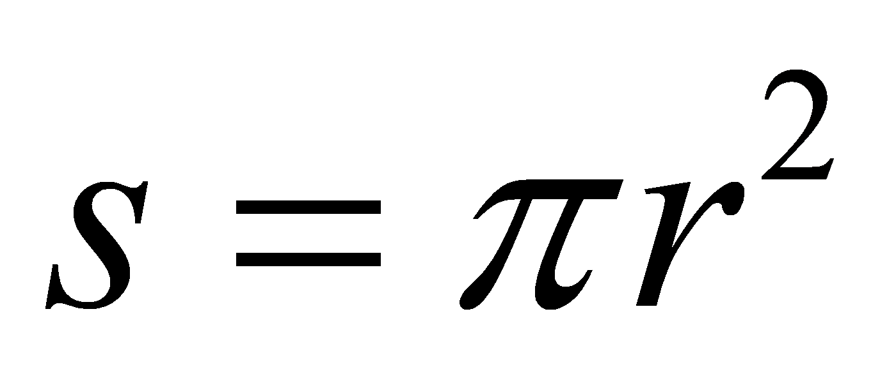
，（6） ，（7）
，（7） ，（8）
，（8） ，其中代数式的个数是（ ）
，其中代数式的个数是（ ）A．3个 B．4个 C．5个 D．6个
知识点02 代数式的书写格式
①代数式中出现乘号，通常省略不写，如vt；
②数字与字母相乘时，数字应写在字母前面，如4a；
③带分数与字母相乘时，应先把带分数化成假分数，如
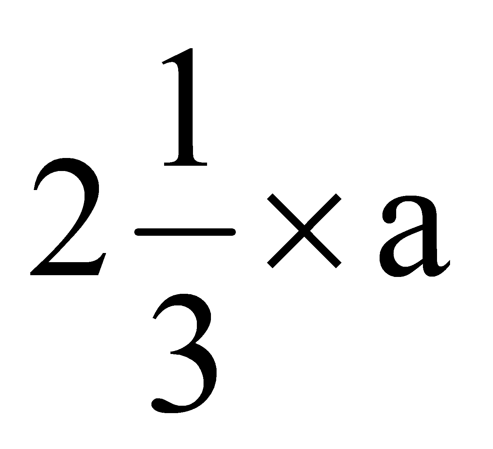
应写作 ；
；④数字与数字相乘，一般仍用“×”号，即“×”号不省略；
⑤在代数式中出现除法运算时，一般写成分数的形式，如4÷（a-4）应写作 ；注意：分数线具有“÷”号和括号的双重作用。
；注意：分数线具有“÷”号和括号的双重作用。
⑥在表示和（或）差的代数式后有单位名称的，则必须把代数式括起来，再将单位名称写在式子的后面，如a2-b2平方米。
【即学即练2】
1．（2023·重庆沙坪坝·模拟预测）下列代数式书写正确的是（ ）
A． B．
B． C．
C． D．
D．
2．（23-24七年级上·河南商丘·阶段练习）下列式子：① ；②
；② ；③
；③ ；④
；④ 中．格式书写正确的有 ．（填序号）
中．格式书写正确的有 ．（填序号）
知识点03 数学思想之整体代入法
1.整体思想：就是从问题的整体性质出发，把某些式子看成一个整体，把握它们之间的关联，进行有目的、有意识的整体处理．
2.根据条件进行求值时，我们可以根据条件的结构特征，合理变形，构造出条件中含有的模型，然后整体代入，从整体上把握解的方向和策略，从而使复杂问题简单化．
【即学即练3】
1．（23-24六年级下·黑龙江大庆·期中）若代数式 的值为2，则
的值为2，则 的值为
的值为
题型01 列代数式
【典例1】（23-24七年级上·新疆乌鲁木齐·期末）列式表示a与b的和的平方与a与b的平方和的差 ．
【变式1】（23-24七年级上·湖南株洲·期末）如果1千克苹果的价格为m元，那么3千克苹果的价格为 元；
【变式2】（2024·吉林·模拟预测）元宵节是中国传统节日，某单位将100袋元宵分给m位员工．若每人分3袋，仍有剩余，则剩余 袋元宵（用含m的代数式表示）．
【变式3】（24-25九年级上·全国·课后作业）用含x的代数式填空：
①若某商店销售了50件单价为x元的商品，则销售额为 元．
②若某商店销售售价为x元/件的衬衫所得的销售额为2100元，则商店销售该衬衫的数量为 件．
③某商店准备将一款玩具降价销售．调查发现售价每降低1元，平均每周可多卖出20件．降价前每周可卖出200件，若降价x元，则现在每周可卖出 件．
④某短款传统服饰的进价为80元/件，售价为100元/件，销售x件该服饰可获得的利润为 元．
题型02 代数式的概念
【典例2】（23-24六年级上·山东淄博·期末）以下列各式中：① ，②
，② ，③
，③ ，④
，④ ，⑤a，⑥0．是代数式的有（ ）
，⑤a，⑥0．是代数式的有（ ）
A．1个 B．2个 C．3个 D．4个
【变式1】（2024六年级上·上海·专题练习）下列各式不是代数式的是（ ）
A． B．
B． C．
C． D．
D．
【变式2】（2024七年级上·全国·专题练习）下列式子中：①0；② ；③
；③
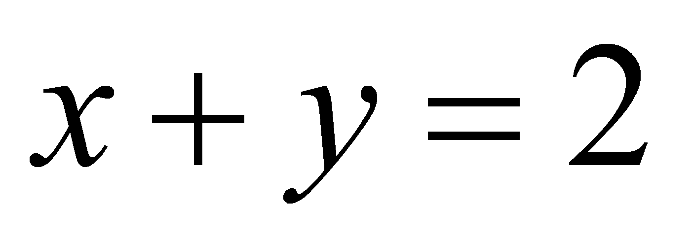
；④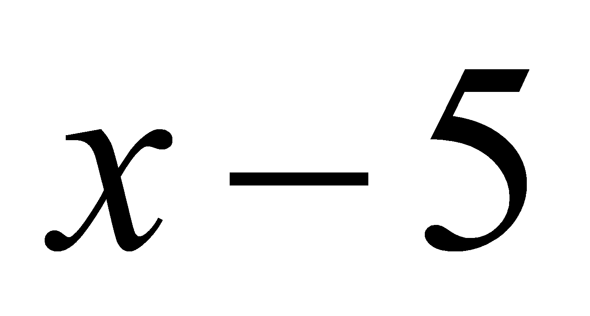
；⑤ ；⑥
；⑥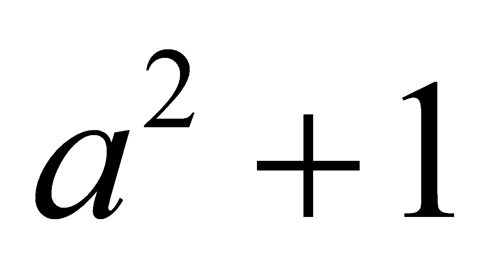
；⑦ ；⑧
；⑧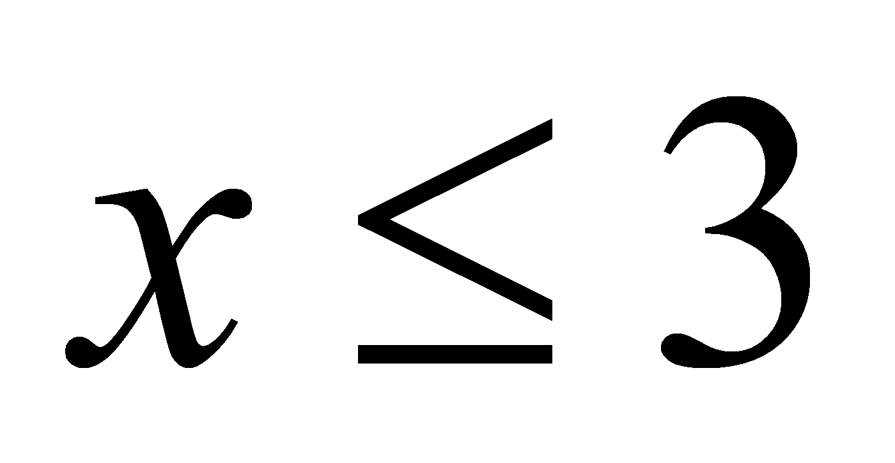
．属于代数式的有（ ）A．4个 B．5个 C．6个 D．7个
【变式3】（23-24八年级下·福建福州·阶段练习）下列式子中：①0；②；③；④；⑤；⑥
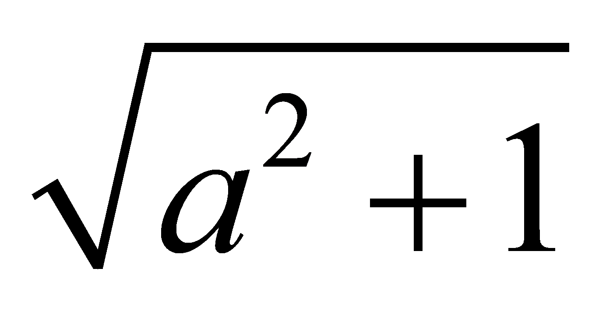
；⑦；⑧．属于代数式的有（ ）A．4个 B．5个 C．6个 D．7个
题型03 代数式书写格式
【典例3】（23-24九年级下·重庆九龙坡·开学考试）下列式子，符合代数式书写格式的是（ ）
A． B．
B．
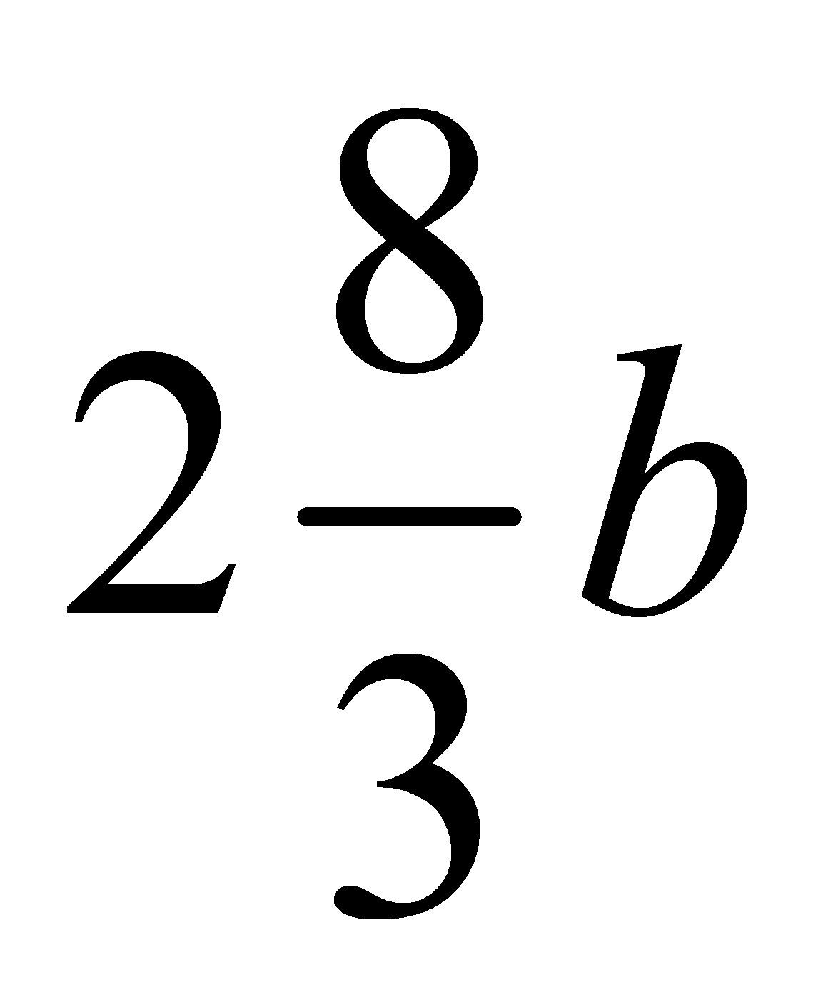
C． D．
D．
【变式1】（22-23七年级上·吉林长春·阶段练习）下列各式中，符合代数式书写规则的是（ ）
A． B．
B． C．
C．
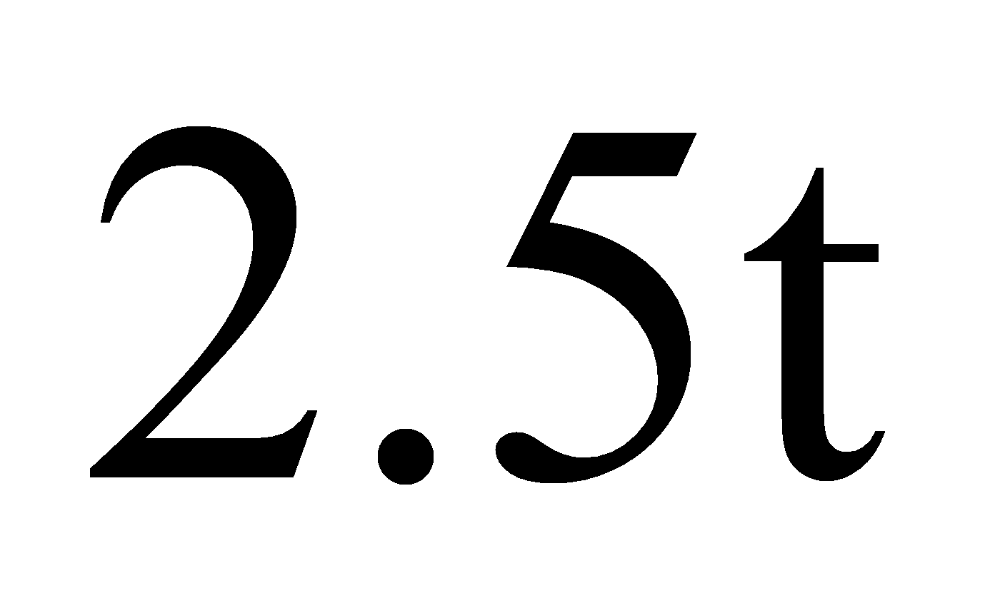
D．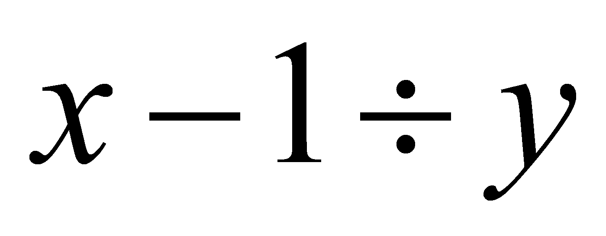
【变式2】（22-23六年级上·山东泰安·阶段练习）下列各式中，书写正确的是（ ）
A． B．
B．
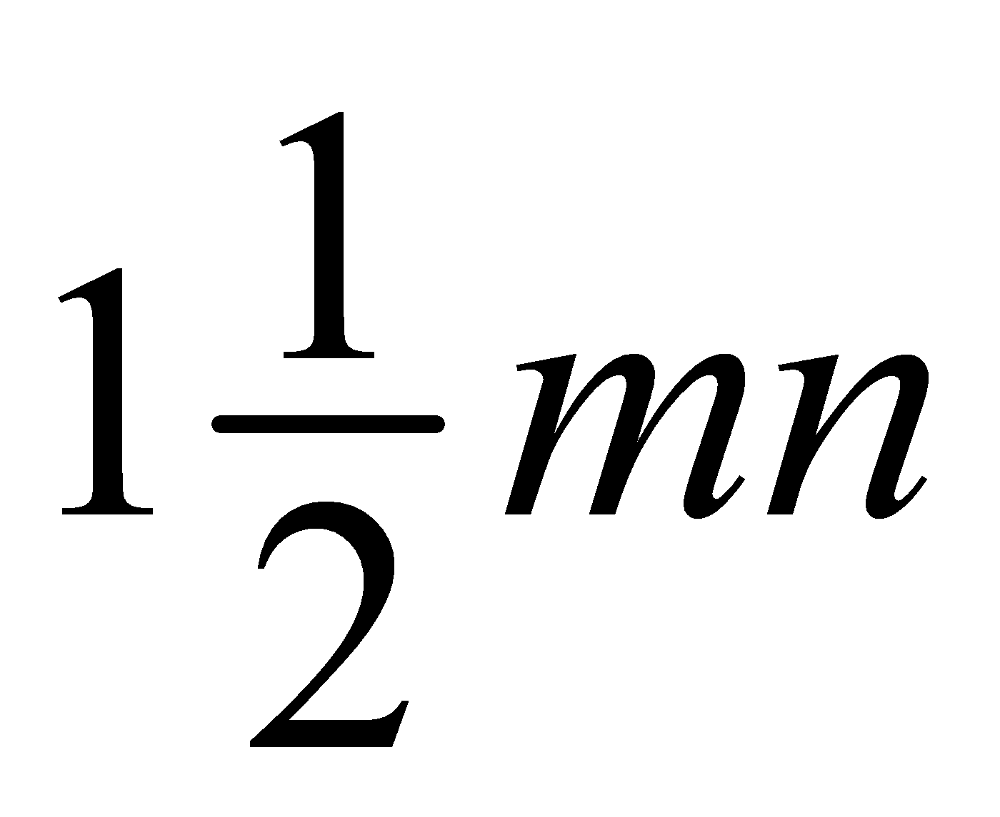
C． D．
D．
【变式3】（22-23六年级上·山东泰安·阶段练习）下列各式中，符合整式书写要求的是（ ）
A． B．
B． C．
C．
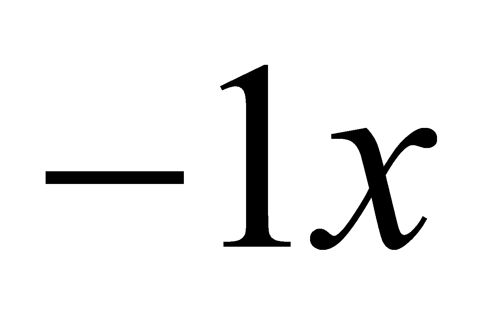
D．
题型04 代数式表示的实际意义
【典例4】（23-24七年级上·河南郑州·阶段练习）请你对“ ”赋予一个实际含义： ．
”赋予一个实际含义： ．
【变式1】（23-24七年级上·河南郑州·期末）请你为代数式 赋予一个实际意义 ．
赋予一个实际意义 ．
【变式2】（23-24七年级上·江苏泰州·期中）已知等边三角形的边长为 ，正方形的边长为
，正方形的边长为
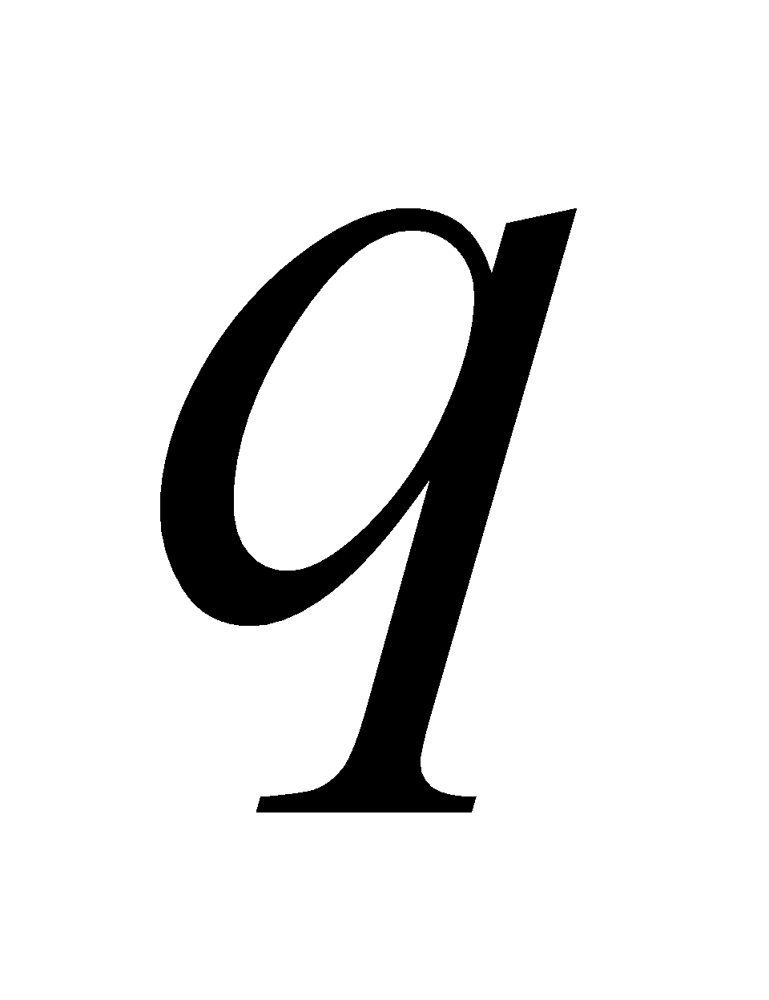
，则 的实际意义为 ．
的实际意义为 ．【变式3】（23-24七年级上·山东枣庄·期中）代数式
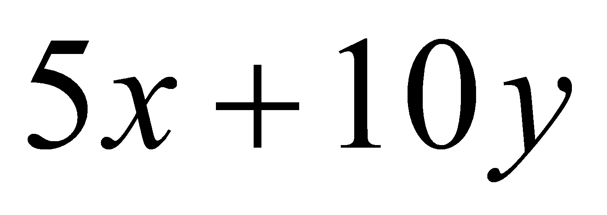
可以解释为： （举一例说明它的实际背景或几何背景）．题型05 已知字母的值，求代数式的值
【典例5】（2024·海南海口·一模）当
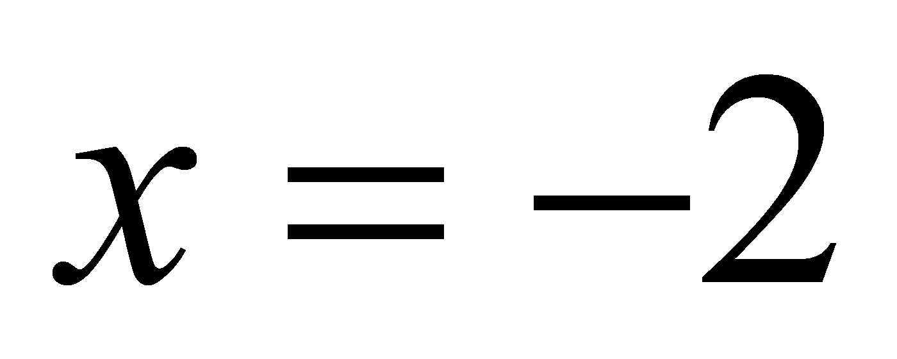
时，代数式 的值是（ ）
的值是（ ）A． B．7 C．1 D．
B．7 C．1 D．
【变式1】（22-23七年级上·甘肃酒泉·期末）当 ，
， 时，代数式
时，代数式
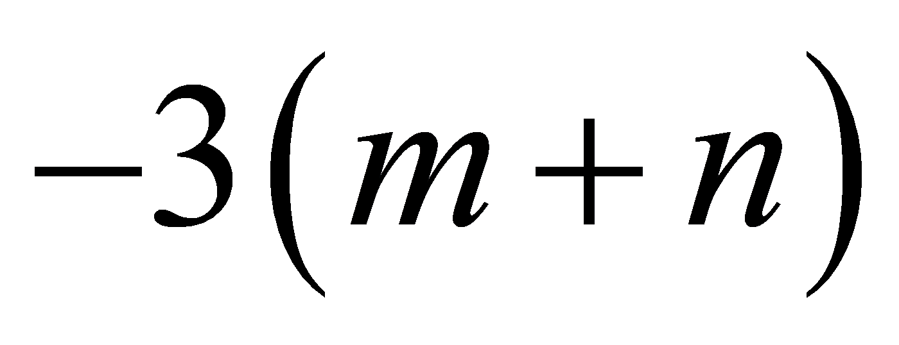
的值是（ ）A．6 B． C．9 D．
C．9 D．
【变式2】（23-24六年级下·全国·假期作业）当 时，求多项式
时，求多项式 的值．
的值．
【变式3】（22-23七年级上·贵州贵阳·期中）某窗户如图，其上方由2个半径相同的四分之一圆组成．
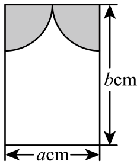
(1)求窗户透光部分的面积S；
(2)若 ，
，
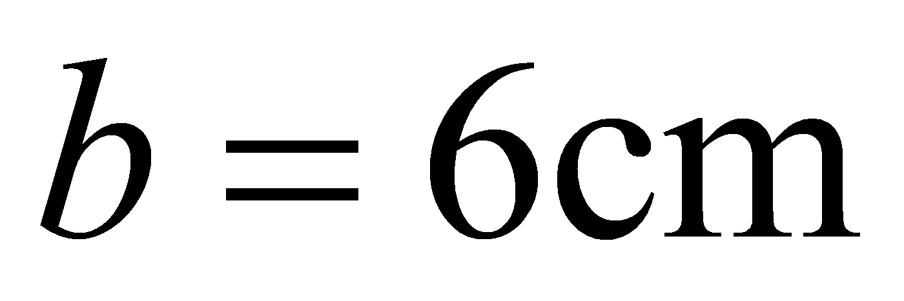
，求透光部分的面积S．（结果保留 ）．
）．题型06 已知式子的值，求代数式的值
【典例6】（23-24七年级上·河北石家庄·期末）当 时，代数式
时，代数式
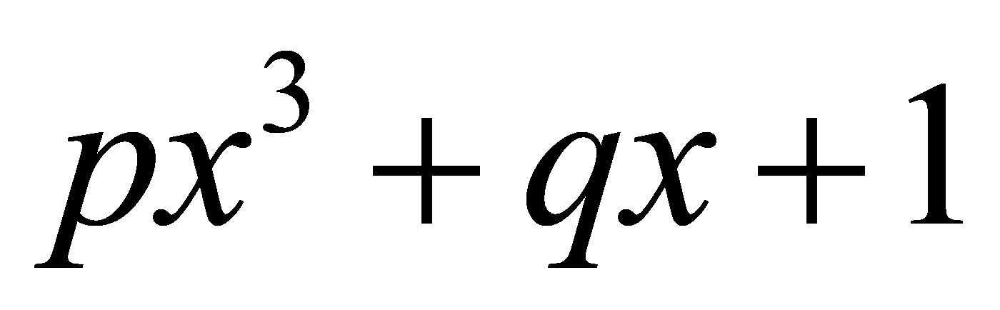
的值为2024，则当时，代数式的值为（ ）A．2022 B． C．2021 D．
C．2021 D．
【变式1】（23-24七年级上·四川达州·期末）若 ，则
，则 的值是( )
的值是( )
A． B．
B． C．
C． D．
D．
【变式2】（23-24七年级上·江苏淮安·期中）若
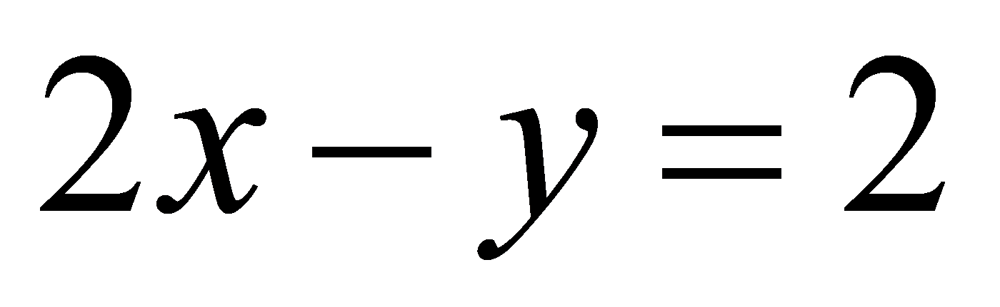
，则 的值是（ ）
的值是（ ）A．3 B．4 C．5 D．6
【变式3】（23-24七年级上·浙江温州·阶段练习）运用整体思想在代数式求值中经常会有用到．
例如：已知 ，则代数式
，则代数式 ．
．
请你根据以上材料解答以下问题：
(1)若
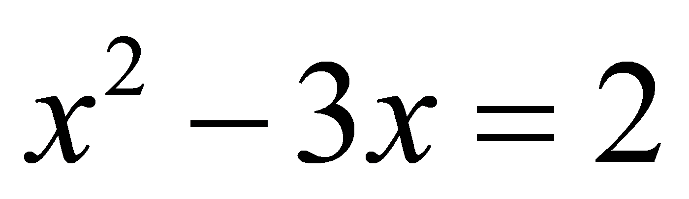
，则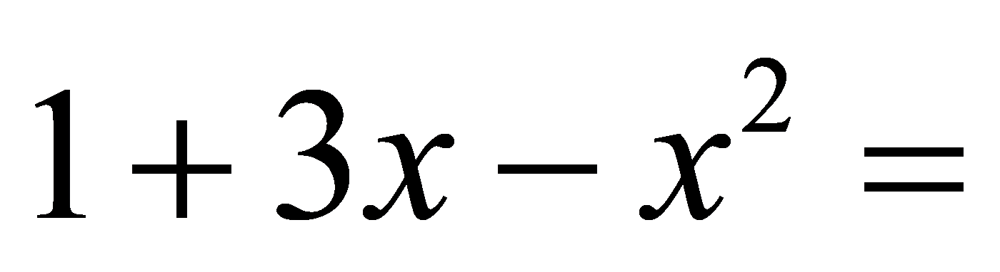
______；(2)已知 ，
，
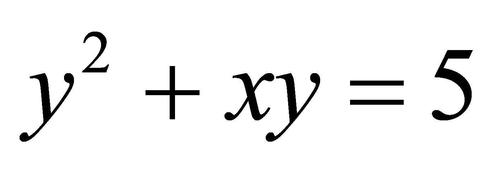
，则 ______；
______；(3)当 ，
， 时，代数式
时，代数式
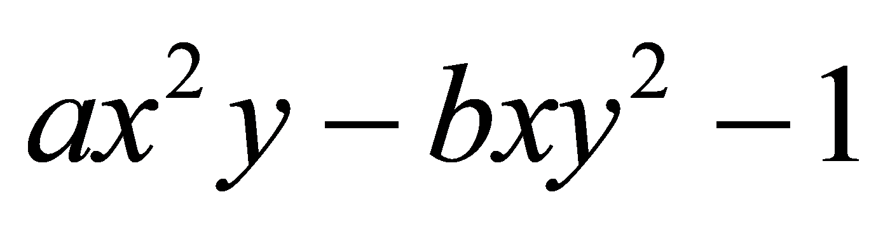
的值为8，则当 ，
， 时，求代数式的值．
时，求代数式的值．
题型07 程序流程图与代数式求值
【典例7】（2024·广东深圳·模拟预测）按如图所示的程序进行计算，若输入x的值是2，则输出y的值是 ．
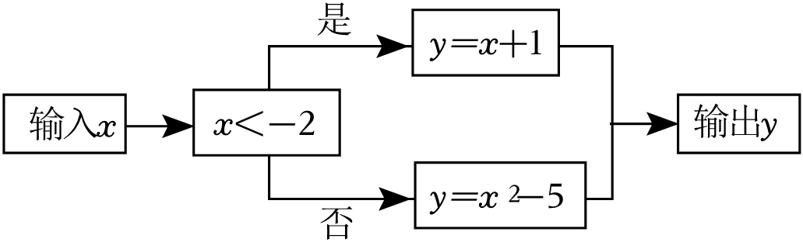
【变式1】（23-24七年级下·贵州贵阳·阶段练习）小星在学习“设计自己的运算程序”综合与实践课后，设计了如图所示的运算程序．若开始输入的 值为
值为 ，则最后输出的结果
，则最后输出的结果 是 ．
是 ．
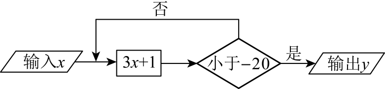
【变式2】（23-24七年级上·江苏宿迁·期末）在如图所示的运算程序中，若开始输入的x的值为36，我们发现第1次输出的结果为18，第2次输出的结果为9，……，则第2023次输出的结果为 ．
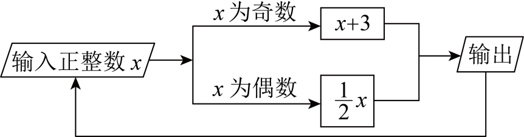
【变式3】（23-24七年级上·湖北荆门·单元测试）按下面的程序计算：

如果输入x的值是正整数，输出结果是150，那么满足条件的x的值为 ．

一、单选题
1．（22-23七年级上·内蒙古通辽·开学考试）下面各式中，符合书写要求的是（ ）
A． B．
B． C．
C． D．
D．
2．（23-24七年级上·云南红河·阶段练习）若 的相反数是3，则
的相反数是3，则
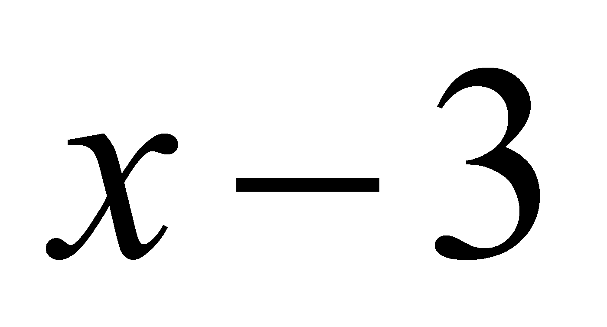
的值是（ ）A．0 B．
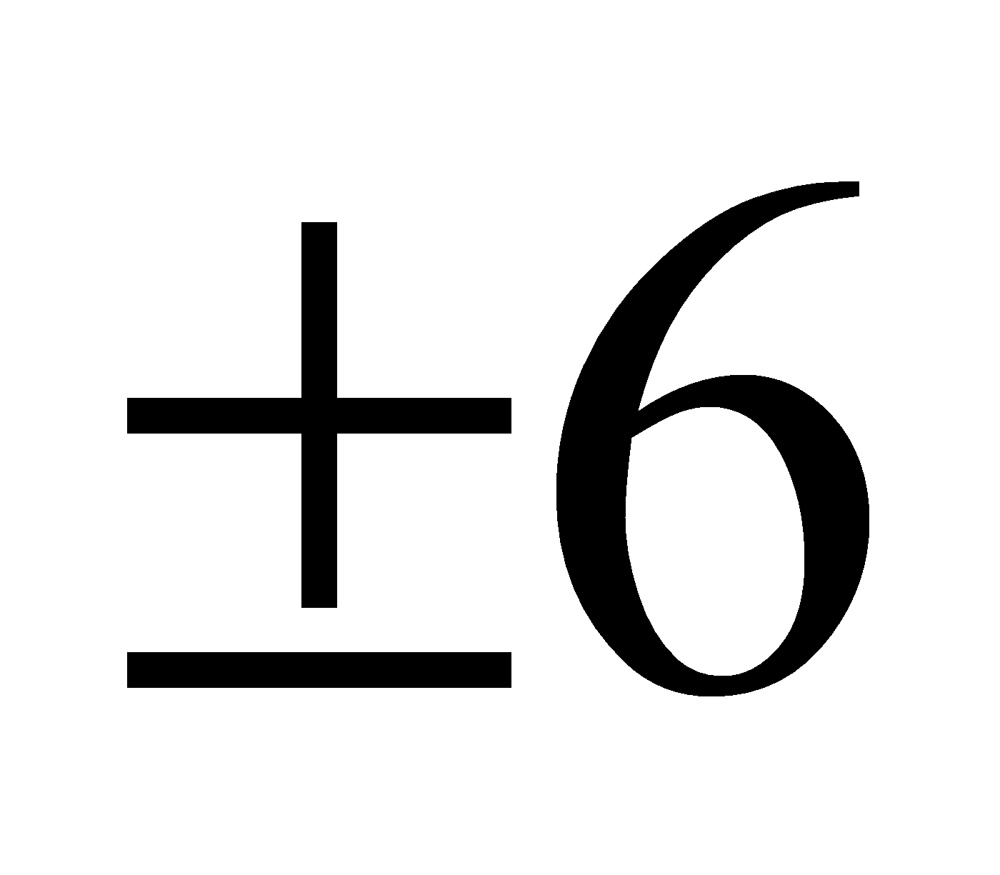
C． D．6
D．63．（23-24七年级上·河北保定·期末）已知
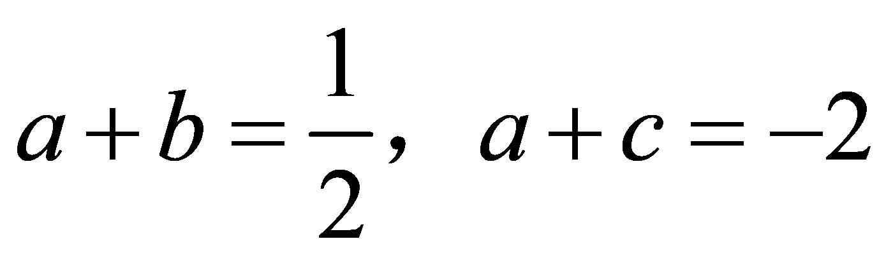
，那么代数式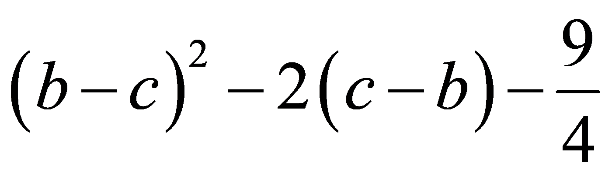
的是（ ）A． B．0 C．3 D．9
B．0 C．3 D．9
4．（2024年湖南省邵阳市中考模拟预测数学试题）为响应“清廉文化进校园”的政策，某校实施“清明行风、清净校风、清正教风、清新学风”等四个建设工程．现需购买甲，乙两种清廉读本共300本供教职工阅读，其中甲种读本的单价为15元/本，乙种读本的单价为20元/本，设购买甲种读本本，则购买乙种读本的费用为（ ）
A． 元 B．
元 B． 元 C．
元 C． 元 D．
元 D．
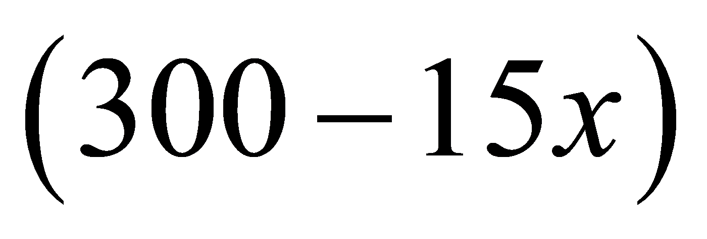
元5．（23-24八年级下·山东德州·期末）根据如图所示的程序计算函数y的值，若输入x的值是2，则输出y的值是 ；若输入x的值是7，则输出y的值是（ ）
；若输入x的值是7，则输出y的值是（ ）
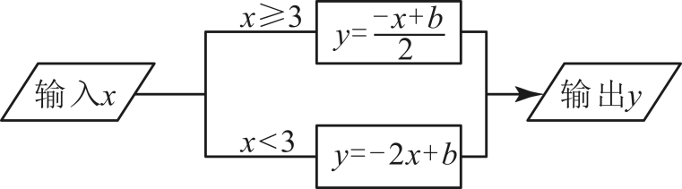
A． B． C．0 D．1
B． C．0 D．1
二、填空题
6．（23-24七年级上·全国·课堂例题）已知下列各式：① ，②8，③
，②8，③
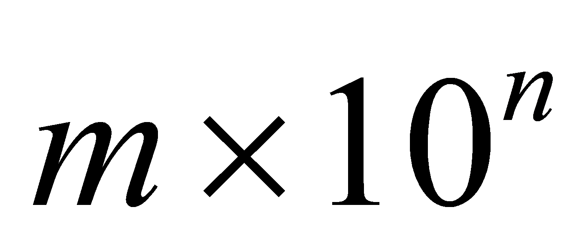
，④ ，⑤
，⑤ ，⑥
，⑥ ，
，⑦ ，⑧
，⑧
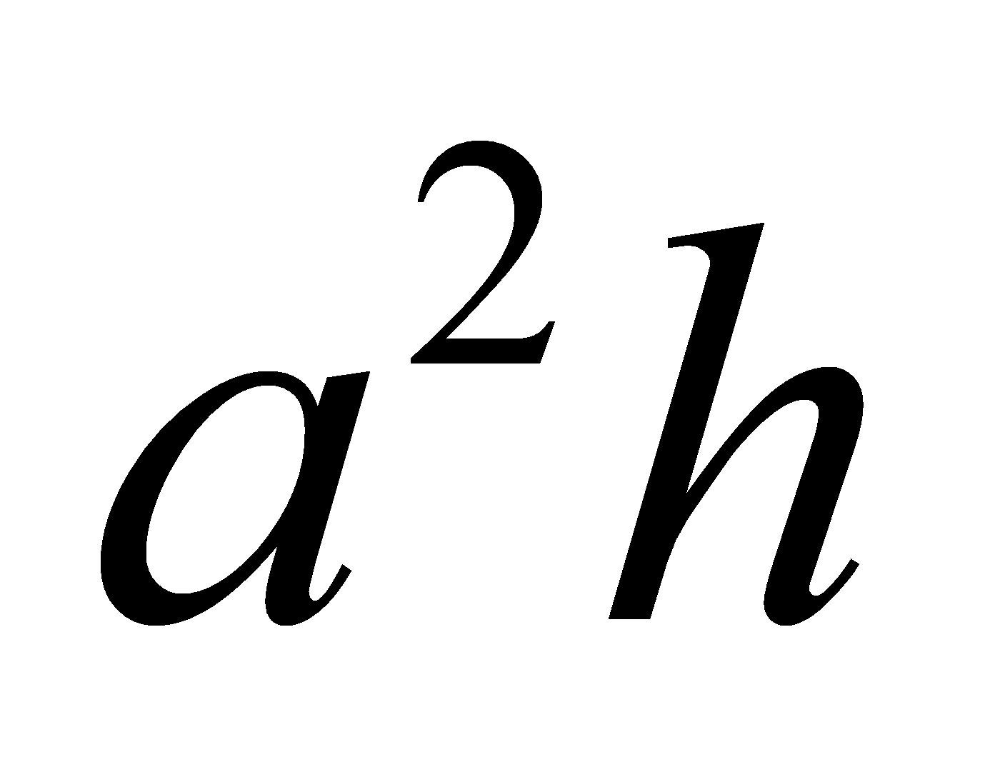
，⑨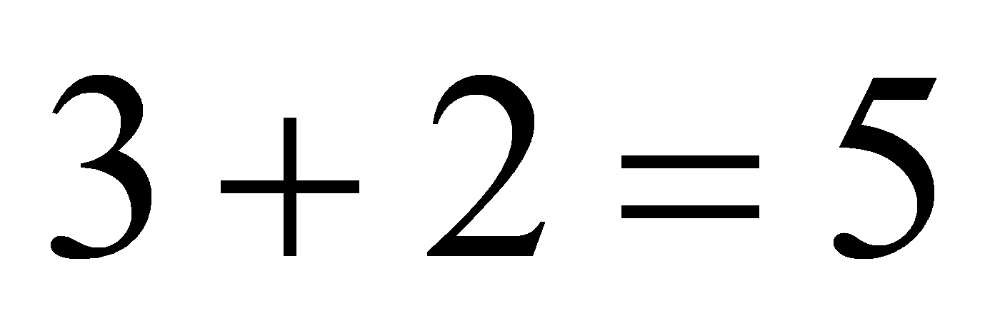
，⑩ ，其中代数式有 （填写序号）．
，其中代数式有 （填写序号）．7．（23-24七年级上·江苏徐州·期中）某超市的苹果价格如图，试说明代数式
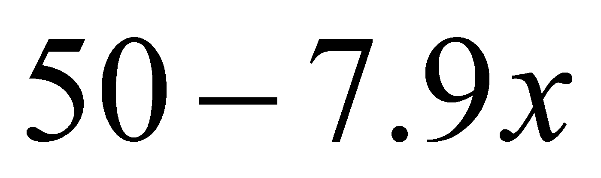
的实际意义 ．
8．（23-24七年级上·云南昭通·期末）若 ，则代数式
，则代数式 的值是 ．
的值是 ．
9．（22-23七年级上·广西柳州·期末）一个两位数，十位上的数字为a，个位上的数字为b，则这个两位数是 ．
10．（24-25七年级上·安徽合肥·阶段练习）定义一种新运算“※”，对于任意的两个有理数 ，
， ．问：若
．问：若 与
与 互为倒数，
互为倒数， 与5互为相反数，
与5互为相反数，
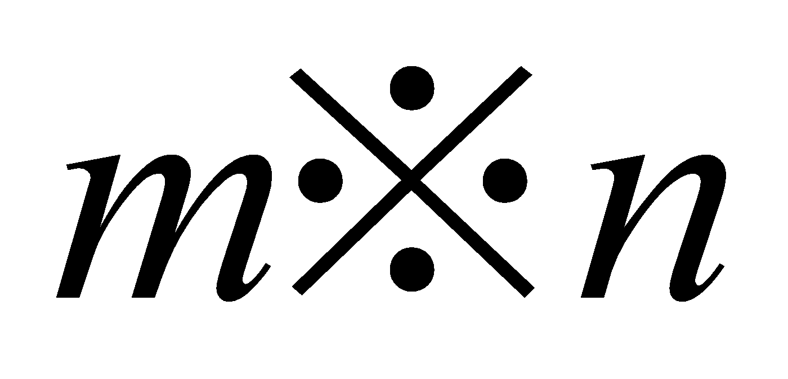
的值为 ．三、解答题
11．（23-24七年级上·山东菏泽·期末）用代数式表示
(1)的平方的3倍与5的差
(2)比的倒数与 的倒数的和大1的数
的倒数的和大1的数
(3)、两数的平方和减去它们乘积的2倍
(4)、两数的平方差除以、两数的和的平方所得的商．
12．（23-24七年级上·吉林·期中）若、互为相反数， 、
、 互为倒数，的绝对值等于3．
互为倒数，的绝对值等于3．
(1)填空： ____；
____；
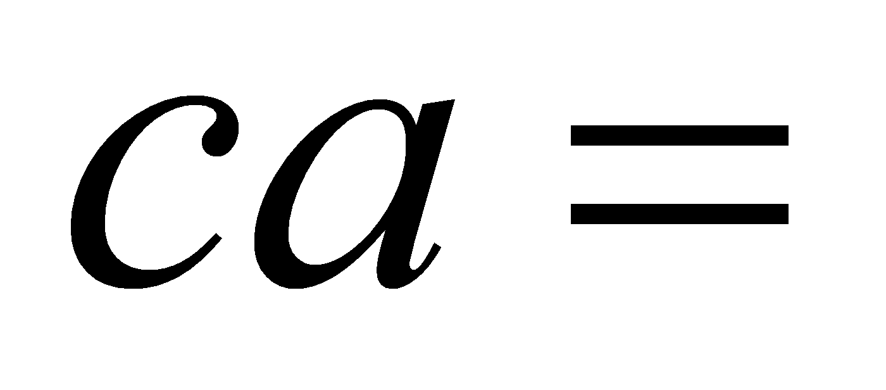
________； ________；
________；(2)求 的值．
的值．
13．（23-24七年级上·吉林白城·阶段练习）某学校办公楼前有一块长为，宽为的长方形空地，在中心位置留出一个半径为的圆形区域建一个喷泉，两边是两块长方形的休息区，阴影部分为绿地．
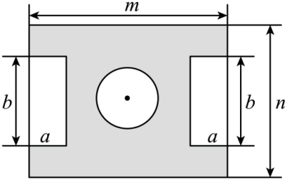
(1)用含字母 和
和 的式子表示阴影部分的面积；
的式子表示阴影部分的面积；
(2)当
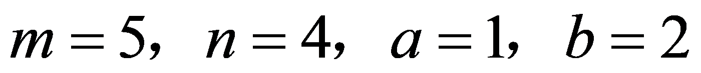
时，阴影部分面积是多少（取3）？14．（23-24七年级上·辽宁丹东·期中）某乒乓球训练馆准备购买10副某种品牌的乒乓球拍，每副球拍配 个乒乓球，已知A，B两家超市都有这个品牌的乒乓球拍和乒乓球出售，且每副球拍的标价都为20元，每个乒乓球的标价都为1元．现两家超市正在促销，A超市所有商品均打九折（按原价的90%付费）销售，而B超市买1副乒乓球拍送3个乒乓球．
个乒乓球，已知A，B两家超市都有这个品牌的乒乓球拍和乒乓球出售，且每副球拍的标价都为20元，每个乒乓球的标价都为1元．现两家超市正在促销，A超市所有商品均打九折（按原价的90%付费）销售，而B超市买1副乒乓球拍送3个乒乓球．
(1)则在A超市购买需要_________元，在B超市购买需要________元
(2)当每副球拍配10个乒乓球时，分别计算一下去A超市和B超市购买的费用各是多少元?
(3)当 时，最省钱的购买方案是__________．
时，最省钱的购买方案是__________．
15．（22-23七年级上·海南海口·期中）新学期，两摞规格相同的数学课本整齐的叠放在讲台上，请根据图中所给出的数据信息
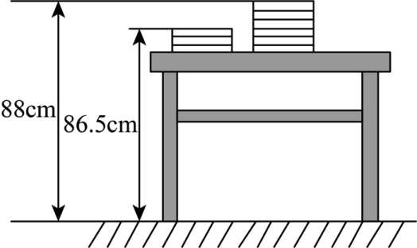
(1)每本书的高度为  ，课桌的高度为 ．
，课桌的高度为 ．
(2)当课本数为x（本）时，请写出同样叠放在桌面上的一摞数学课本高出地面的距离 用含x的代数式表示）．
(3)桌面上有55本与题（1）中相同的数学课本，整齐叠放成一摞，若有16名同学各从中取走一本，求余下的数学课本高出地面的距离．
16．（22-23七年级上·四川成都·期中）整体代换是数学的一种思想方法，在求代数式的值中，整体代换思想非常常用，例如 ，求
，求
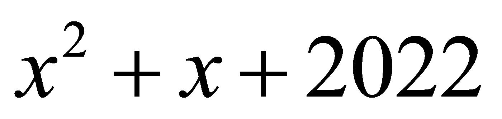
的值，我们将 作为一个整体代入，则原式
作为一个整体代入，则原式 ．
．仿照上面的解题方法，完成下面的问题：
(1)若
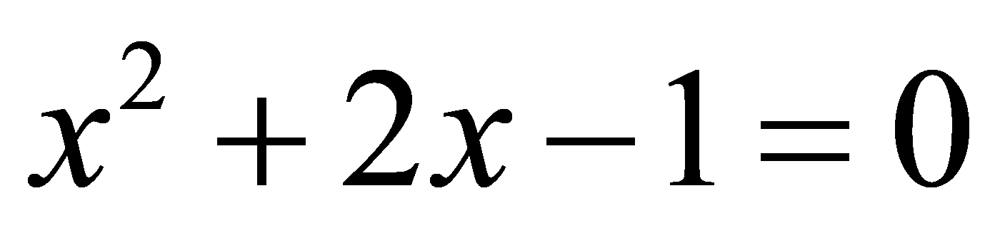
，则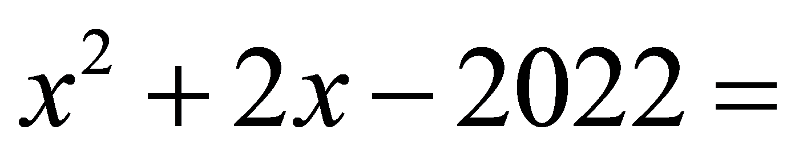
_____．(2)若
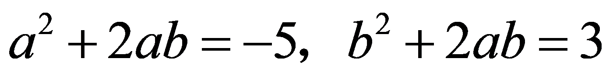
，求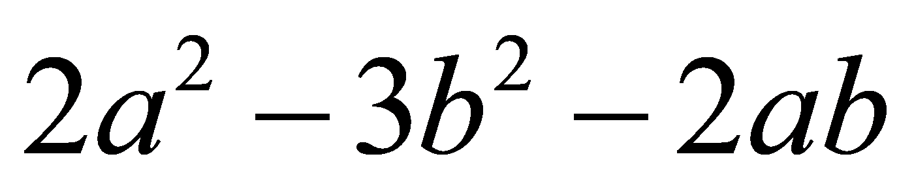
的值．